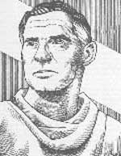

1553 yılında ünlü bir İspanyol doktor olan Michael Servetus (1509-1553) İsviçre’nin Cenova şehrinde sapkınlıkla suçlanmasının ardından kazığa bağlanarak yakıldı. Şehrin yetkililerine göre o bir Arianistti. Yani kutsal üçlemenin varlığını inkar ediyordu.

Mısırlı teolog Arius’un (250-336) ölümünden 1200 yıl sonra bile insanlar Arianist olmakla suçlanıp idam edilebiliyorlardı. Bu durum belki de muhalif rahibin düşüncelerinin gücünü ortaya koymaktadır. Yaşadığı süre boyunca Arius, Hz. İsa’nın Tanrı’nın oğlu olduğu inancına saldırarak Hıristiyan dünyasında büyük bir krizin yaşanmasına neden oldu.
İskenderiyeli olan Arius bugün Türkiye sınırlarında yer alan Antioch’ta (Antakya) eğitim aldı. Daha sonra Hıristiyanlığın o dönemdeki entelektüel merkezi olan doğduğu şehre geri döndü. 306 yılında yardımcı papaz oldu. İlk olarak 311 yılında aforoz edilmesine rağmen birkaç yıl sonra kilise ile arasını düzeltti.
318 yılında Arius ve yerel bir piskopos, Hz. İsa ve Tanrı’nın ilişkisi ile ilgili bir tartışmaya girişince Ariancı muhalefet kendini göstermiş oldu. Piskopos pek çok Hıristiyan gibi Tanrı’nın üç biçimde ortaya çıktığına inanıyordu: Baba, oğul ve kutsal ruh. Arius ise söz konusu üçleme konseptine şüpheyle yaklaşıyordu.
Arius pek çok önemli ismi etkiledi. Özellikle Suriye’de cemaati ciddi bir kriz yaratabilecek kadar büyüdü. Bunun üzerine kilise 325 yılında Nicaea (İznik) Konsülü’nü topladı. Bu, Hıristiyanlık tarihinde yapılan bu tarzdaki ilk toplantıydı. Daha sonraları Constantinople (İstanbul) yakınlarındaki bir şehir olan Nicaea’da 381 yılında bir toplantı daha yapılacaktı. Toplantıda piskoposlar üçleme konseptini resmi olarak tasdiklediler ve “Nicene Amentüsü”nü yazdılar. Bu, dinin temellerini standartlaştırmak amacıyla yazılmış Hıristiyanlık öğretisinin temel metinlerinden biriydi: “Biz tek tanrıya inanıyoruz. Her şeye kadir baba. Yerin, göğün, görünen ve görünmeyen her şeyin yaratıcısı.” Yenilgiye uğrayan Arius ve taraftarları sürgüne gönderildiler. Kısa süre sonra ileride rakipleri tarafından zehirlenerek öldürüleceği İstanbul’a geri döndü.
Düşünceleri yüzlerce yıl baskı altında tutulmuş olmasına rağmen üçlemeye karşı geliştirdiği eleştiriler Hıristiyan dünyasında asla tam olarak unutulmadı. Modern zamanlarda Hz. İsa’yı Tanrı değil, sadece bir peygamber ve ahlak önderi olarak gören Birlikçi (Unitarian) Teoloji Arius’un düşüncelerinin günümüzdeki yansıması olarak ortaya çıkmıştır.
Ek Bilgiler
1- Kilise Arius’u resmi olarak yaygın inançlara aykırı görüşler ortaya atan bir sapkın olarak damgaladı.
2- Nicaea’daki toplantıda üç yüz delegeye karşı sadece iki Mısırlı piskopos Arius’u desteklemişti. Oylamadan sonra Arius ve iki piskopos Balkanlar’daki bir Roma eyaleti olan Illyria’ya sürgün edildiler.
3- 787 yılında bir başka tartışmanın çözümü için yeniden Nicaea Konsülü toplandı. Bu kez tartışma konusu Hıristiyan inancında dini ikonların oynadığı rol ile ilgiliydi. Konsül ikonların kiliseden çıkarılmasını öneren İconoclastlar’a karşı çıkarak bunların kullanımını onayladı.